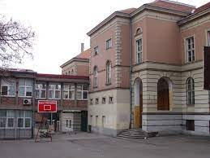
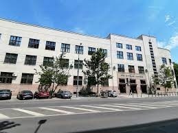

Hronologija dosadašnjeg obrazovanja
Osnovna škola Vuk Karadžić
Svoje obrazovanje započela sam u Osnovnoj školi Vuk Karadžić 2006. godine. Roditelji su se odlučili za ovu školu zbog blizine mesta stanovanja i preporuke prijatelja.
Prva beogradska gimnazija
Oduvek sam pokazivala ljubav prema prirodnim naukama, posebno prema matematici. Nastavila sam da gajim tu ljubav na prirodno matematičkom smeru Prve beogradse gimnazije.
Fakultet za Informatiku i računarstvo
Nakon zavrsetka gimnazije upisala sam Fakultet za Informatiku i računarstvo, smer Informacione tehnologije na Univerzitetu Singidunum u Beogradu.
Ekonomski fakultet u Beogradu

Nakon zavrsenih osnovnih studija svoje dalje usavršavanje nastavljam na Ekonomskom fakultetu u Beogradu upisivanjem mastera na ekgleskom jeziku.
Cubes IT School
Pored regularnih studija, slobodno vreme sam koristila i za sticanje dodatnog znanja iz srodnih oblasti. Završila sam nekoliko kurseva iz oblasti digitalnog marketinga i programiranja. Pohađala sam nekoliko različitih škola, a jedna od njih je upravo Cubes.
Cubes d.o.o. je kompanija inspirisana da kreira inovativna i kreativna rešenja, koja našim klijentima otvaraju vrata uspeha. Uspevši da na jednom mestu objedini više usluga, Cubes d.o.o. nudi svojim klijentima mogućnost da na jednom mestu dobiju kompletnu IT podršku i sve uslove za razvoj svog poslovanja i automatizaciju poslovnih procesa. Naše poslovanje je podeljeno u više oblasti: Razvoj Web aplikacija, Razvoj Mobilnih aplikacija, Razvoj i implementacija poslovnih rešenja, Web dizajn i Internet Marketing.

Osnove programiranja iz HTMLa, CSSa, VSCodea

Osnovno znanje iz Adobe Photoshopa